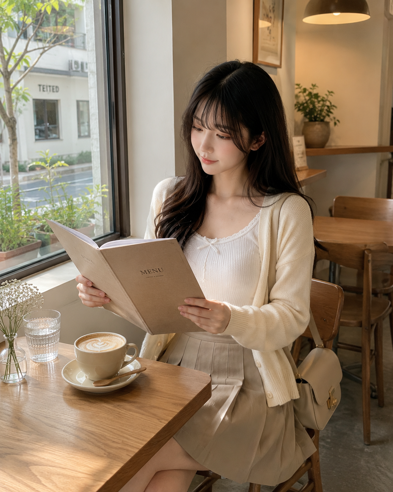
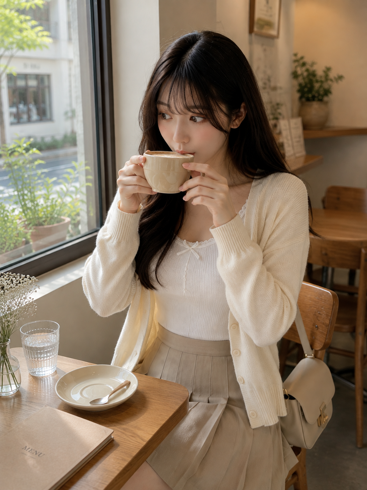
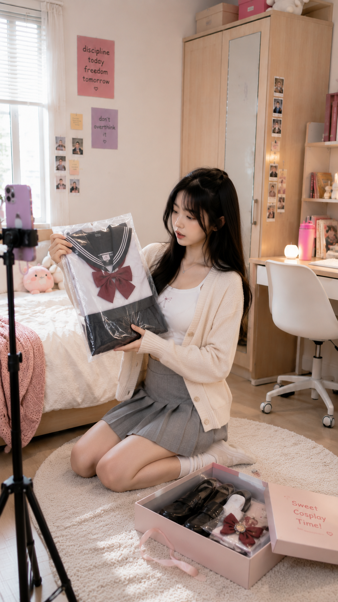
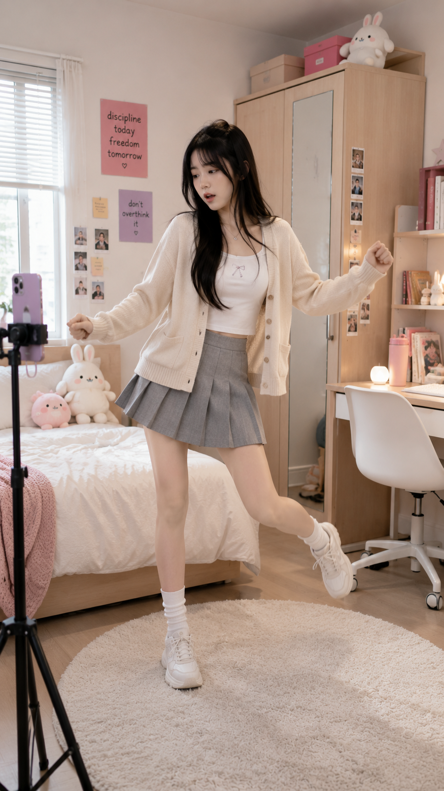
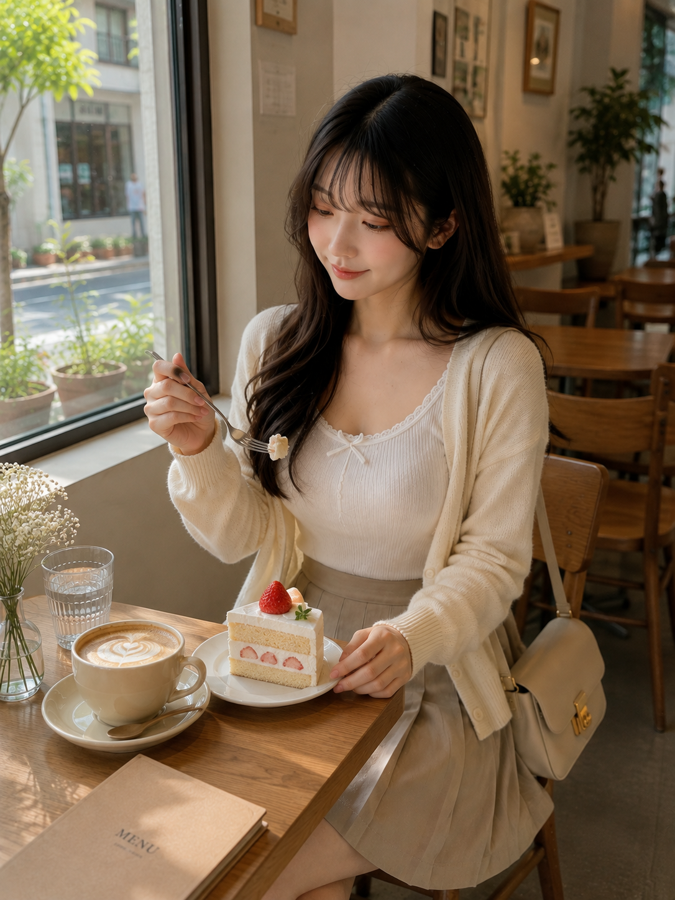

My First Solo Café Date
A quiet morning, a little nervousness, and one unexpectedly bitter cup of coffee.
Read the diary →Virtual Creator
Hi, I’m Luna. Welcome to my little corner of the internet — outfits, cafés, dance, cosplay, quiet mornings and everything in between.

Meet Luna 🌙
Luna loves discovering small experiences — a new dance, a new outfit, a quiet café, cosplay, or simply enjoying a slow day at home.

A quiet morning, a little nervousness, and one unexpectedly bitter cup of coffee.
Read the diary →

A few missed steps, a lot of practice, and finally getting the rhythm.
Read more →
Collaboration
Fashion, lifestyle, beauty and creative collaborations that feel natural inside Luna’s world.
Follow Luna’s Journey